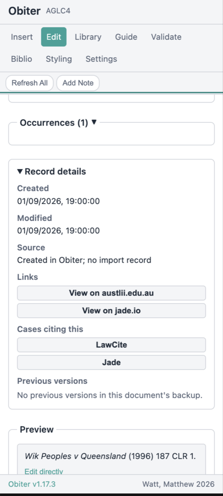
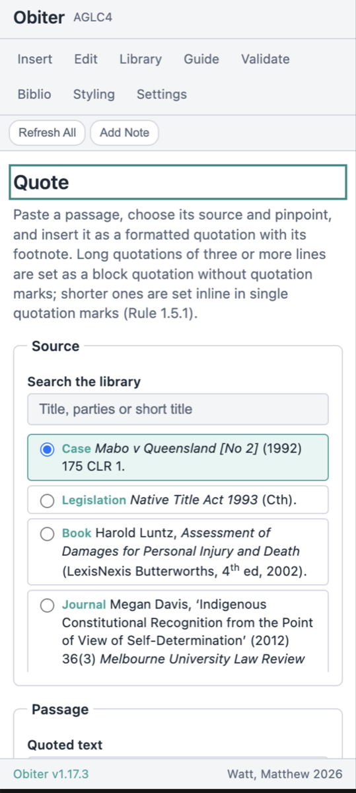

Obiter Documentation
A complete walkthrough of every Obiter feature — how to use the AGLC referencing add-in for Microsoft Word, rather than the citation rules themselves. For the rules of the Australian Guide to Legal Citation, see the What is AGLC4? page.
Contents
- Getting Started
- Setting Up Your Document
- Inserting Citations
- Citation Library
- Subsequent References
- Editing Citations
- Tags
- Find Duplicates
- Record Details and Previous Versions
- Update from Source
- Cited By
- Quotations
- Bibliography
- Validation
- Scan and Repair, and Recovery
- Reference Guide
- AI Assistant (Optional)
- Settings
- Multi-Standard Support
- Court Submission Mode
- Additional Standards
- Keyboard Shortcuts & Tips
1. Getting Started
Installation
The recommended way to install Obiter is from Microsoft AppSource. See the step-by-step installation instructions on the Download page.
The Obiter ribbon tab
Once installed, Obiter adds a dedicated Obiter tab to the Word ribbon. It contains buttons for Insert Citation, Library, Validate, Bibliography, Guide, Refresh All, Apply Template, Block Quote, Styling, and Settings. Every feature is accessible from this tab.

2. Setting Up Your Document
Applying the AGLC4 template
Obiter can apply the correct AGLC4 document formatting in one step. Click Apply Template in the ribbon to set the correct font, margins, line spacing, and footnote formatting. This saves you from configuring each setting manually.
Heading levels
AGLC4 defines five heading levels with specific formatting. Obiter provides toolbar pills (labelled I through V) in the ribbon that apply the correct heading style to the current paragraph. Level I is the highest (small capitals, centred, numbered I, II, III), Levels II to V are italic, and each level carries its own numbering (Rule 1.12.2). The same five buttons are in the Styling view.
Select the text you want as a heading, then click the appropriate level button. The formatting is applied instantly.
Adding a title and author
The Styling view has a Title & Author section for adding a paper’s title and author line, formatted per AGLC4 Rule 1.12.1. Place your cursor where the lines should go (usually the top of the document), type the title and the author, and click Add Title then Add Author. The cursor moves below each line, so the two stack in order.
- Title is rendered bold and capitalised (Rule 1.12.1), both centred.
- Author is rendered in small capitals with a full-size initial — type the name in any case (for example “matt watt” or “MATT WATT”) and Obiter shows it as a large initial with small capitals for the rest.
- A small-caps title option is also offered for a non-standard variant; it is clearly marked as not standard AGLC4 (AGLC4 uses bold for the title).
Word for the web: the browser version of Word does not render the small-capitals font attribute, so the author line (and any small-caps heading or title) will display in ordinary capitals there. The formatting is stored correctly and appears as small capitals when the document is opened in Word for Windows, Mac, or iPad.
3. Inserting Citations
Selecting a source type
Click Insert Citation in the ribbon to open the task pane. Start by selecting the type of source you are citing. Obiter supports 80+ source types across all 26 AGLC4 chapters, including cases, legislation, journal articles, books, treaties, and international materials.
Source types are organised by category. Use the search field or browse the list to find the one you need. If you are unsure which type to choose, the Help Me Choose button (also labelled Identify, available when AI is enabled) can suggest the correct type based on a description of your source. When it identifies a source, it hands the text straight to Paste Citation so the fields can be parsed and filled in one step.
Filling in the citation form
Each source type has its own form with the fields required by AGLC4. For example, a reported case requires the case name, year, volume, report series, and starting page. Required fields are marked and the form will not submit until they are filled.
As an example workflow for a reported case:
- Select Reported Case from the source type list.
- Enter the case name (e.g. “Mabo v Queensland (No 2)”).
- Enter the year, volume, report series, and starting page.
- Add a pinpoint reference if citing a specific page or paragraph.
- Review the live preview at the bottom of the form.
- Click Insert to add the citation as a footnote.
The live preview
As you fill in the form, a live preview at the bottom shows exactly how the formatted citation will appear in your footnote. This includes all italics, punctuation, and abbreviations that AGLC4 requires. You can check the output before inserting.
Editing the preview directly
In some cases you may need to adjust the formatted output manually. The preview is editable — click into it and make changes directly. This is useful for unusual citations that do not fit neatly into the standard form fields.
Parse with AI
If you have AI enabled, paste a raw citation string into Paste Citation and click Parse. Obiter extracts the individual fields (case name, year, volume, and so on) and fills in the form. Review the live preview before inserting. Nothing is sent to the provider until you click Parse.
Short titles
When inserting a citation, you can assign a short title. This short title is used in subsequent references and in the bibliography. If you leave it blank, Obiter will generate one automatically based on the source type’s conventions.
Custom / Manual Citation
For sources that do not fit any predefined category, select Secondary > Other > Custom / Manual Citation. Enter the full citation text exactly as it should appear in the footnote, and an optional short title for subsequent references. The citation is stored and tracked like any other — ibid, short titles, and cross-references work normally.

4. Citation Library
Viewing all citations
The Citation Library shows every citation in your document. Open it from the ribbon by clicking Library in the Obiter tab. Each entry displays the formatted citation, source type, and short title.
Search and filter
Use the search field at the top of the library to filter citations by any text in the citation — case names, authors, titles, or report series. You can also filter by source type category and, once you have tagged citations, by tag (see Tags below). The toolbar also offers Find duplicates and Scan & Repair, and Clear unused removes every citation no footnote cites.
Library card actions
Each card has Edit, an Insert menu, Details (opens the Edit view with the record details expanded), Quote (opens the Quote panel with this source selected), and Update from source where an online source is enabled for the citation’s type. Cards show the citation’s tags as chips and a Needs details marker where required fields are missing.
Inserting references
To insert a reference to an existing citation, click the citation in the library and use the insert dropdown. You can choose from:
- Auto — Obiter determines the correct format based on position (full, ibid, or short).
- Full — Forces a full citation regardless of position.
- Short — Inserts a short reference with a cross-reference note number.
- Ibid — Inserts an ibid reference, optionally with a pinpoint.
In most cases, Auto is the correct choice. Obiter will automatically select the right format based on the citation’s position in the document.
Importing from other tools
Click Import in the Citation Library. Paste records copied from a library catalogue or reference manager, choose one or more exported files, or read Word’s own Source Manager. Obiter reads RIS, EndNote XML, BibTeX, CSL-JSON and Word Source Manager XML, and tells you what it detected (for example “Detected: RIS · 12 records”).
Before anything is added you see a preview of every record with the AGLC source type Obiter chose, the formatted citation, and whether the record is ready, needs more details, or is already in the library. Change the source type on any row, exclude what you do not want, then click Add. Records still missing required fields are marked Needs details in the library so you can complete them in Edit.
Cases and legislation carry their identifying details in different fields depending on the export. Obiter recognises a report citation, a medium neutral citation or an Act title wherever the export put it, including EndNote XML built with the UTS AGLC4 reference types, and keeps any metadata AGLC does not cite so a later export loses nothing. Keywords on an imported record become tags.
A record that was exported from this document and comes back in a later import is recognised as “Already in library (exported from here)”. Tick Update existing on that row to refresh the existing citation with the imported values instead of adding a second record.
Exporting the library
Click Export and choose What to export: all the citations in the library, the ones you have selected, or the ones shown by the current search and filter. Choose a Format — RIS, EndNote XML, BibTeX, CSL-JSON or a plain formatted AGLC list — and, for EndNote XML, whether to write the UTS AGLC4 reference types or the EndNote generic reference types. Then pick a Destination: download the file, copy it to the clipboard, or show it as text. Each exported record carries the formatted AGLC citation as a note, so the correct form is visible in any tool that reads the file even where that tool cannot rebuild it, and a later re-import into Obiter recognises the record and offers to update it instead of duplicating it. Your tags are written as the record’s keywords.

5. Subsequent References
How Obiter handles ibid
AGLC4 Rule 1.4.3 requires that ibid is used when a footnote cites the same single source as the immediately preceding footnote. Obiter detects this automatically. When you insert a citation that refers to the same source as the previous footnote, Obiter formats it as Ibid (with an optional pinpoint) instead of repeating the full citation.
If the preceding footnote cites multiple sources, ibid cannot be used. Obiter handles this correctly and falls back to a short reference instead.
Short references with cross-reference notes
When a source has been cited in full earlier in the document but ibid does not apply, Obiter inserts a short reference in the form “Short Title (n X) pinpoint”, where X is the footnote number of the first full citation. These cross-reference numbers are managed as fields and update automatically when footnotes are reordered.
The Refresh All button
If you have moved, deleted, or reordered footnotes, click Refresh All in the ribbon. Obiter rescans the entire document and recalculates every ibid, short reference, and cross-reference note number. This ensures all subsequent references remain correct after edits.
6. Editing Citations
Clicking a citation to edit
Every citation Obiter inserts is wrapped in a content control. To edit a citation, click on it in the footnote. Obiter detects the click and opens the Edit Citation view in the task pane with the citation’s data loaded.
The Edit Citation view
The Edit Citation view shows the same form you used to insert the citation, pre-filled with the current values. Change any field, and the live preview updates to reflect your changes. Click Update to save the changes back to the document. The view also holds the citation’s Tags field and, at the foot, the Record details panel with its history, source links and previous versions (see the sections below).
Format toggle
In the Edit Citation view, you can override the reference format. The format toggle lets you switch between Auto, Full, Short, and Ibid. Auto is the default and lets Obiter determine the correct format based on position. Overriding to Full forces a full citation even when Obiter would normally use ibid or a short reference.
Deleting citations
To delete a citation, open the Edit Citation view and click Delete. This removes the citation from the document and the library. After deleting, run Refresh All to update any subsequent references that may have been affected.
Occurrences — every footnote a citation appears in
A single source is often cited in several footnotes. The Occurrences panel in the Edit Citation view lists every footnote where the citation appears, with the footnote number, its current format (Auto / Full / Short / Ibid), and any pinpoint. From here you can change an individual occurrence’s format or pinpoint, remove a single occurrence, or jump to where it appears — without affecting the other occurrences.
Locking a footnote
Obiter re-formats citations automatically as your document changes. If you have hand-corrected a footnote at proof-reading and want to make sure Obiter does not overwrite it, Lock it. In the Edit Citation view, open Occurrences and click Lock on the footnote you want to freeze. A locked footnote is kept exactly as it reads and is skipped by every refresh; a Locked badge marks it.
- Edit text while locked. A locked single-citation footnote shows its actual text, which you can edit in the panel and save — it stays locked. (Edited text is stored as plain text, so rich formatting such as case-name italics is best applied by editing the footnote directly in Word, which a lock preserves.)
- Lock all occurrences. Use Lock all to freeze every footnote that cites the source at once.
- Unlock returns the footnote to automatic formatting on the next refresh, discarding the manual edits (you are warned first).
Locking is the safe way to hold a specific correction. For a document you are about to submit, also see Manual Citations Mode (Settings) and the recommendation to export a PDF of the final version.

7. Tags
Tags let you group the sources in a document your own way — by chapter, by argument, by “still to read” — without changing how anything is cited.
Adding tags
Open a citation in the Edit view. The Tags field sits with the citation’s other details. Type a tag and press Enter or a comma to add it; Backspace on an empty box removes the last tag. Tags used elsewhere in the library are offered as completions, so a set of tags stays consistent across the document. Tags are stored in lower case, up to 40 characters, and saved with the citation when you click Update.
Tags Obiter writes for its own purposes — the origin of an import, a “not a duplicate” marker — are shown as read-only labels beside your own and are never exported.
Filtering the library by tag
Each library card shows its tags as chips. Click a chip, or open the Tags filter next to the source-type filter and tick one or more tags, to show only the citations carrying them; the filter summary shows how many tags are active, and Clear tags resets it. The tag filter combines with the search field and the source-type filter, and an export scoped to “shown by the current search and filter” respects it.
Tags travel with the record
On export, your tags are written as the keywords of each record
(KW in RIS, keywords in BibTeX, the keyword
list in EndNote XML and CSL-JSON). On import, keywords become tags, so
a library that moves between tools keeps its groupings.
8. Find Duplicates
The same source can enter a library twice — typed once and imported once, or imported from two exports. Duplicates split a source’s footnotes across two records, so ibid and short forms stop matching and the bibliography lists it twice.
Running the sweep
Click Find duplicates in the Citation Library toolbar. Obiter compares every record with every other and groups the matches. Each group is labelled with what its members were matched on:
- Same DOI, Same ISBN or Same citation key — an identifier the records share.
- Same medium neutral citation or Same report citation — the same case, however its parties were typed.
- Same statute — the same Act title and year.
- Similar title and year — the same title, year and first author after normalisation. Check these before merging.
If nothing matches, the dialog says so and lists the keys it compared. A single card can also be sent to the dialog with Mark as duplicate / merge, which lists the records that share its short title.
Merging a group
The dialog walks the groups one at a time (Previous and Next move between them). For each group:
- Under Keep which citation, choose the record to survive. Each option shows the formatted citation, how many footnotes cite it and when it was added. The oldest record with footnotes is selected by default.
- The table below lists every field where the records differ, one column per record. Pick the value to keep for each field. The survivor’s value is pre-selected, except where it is blank and another record has one.
- Click Merge. The chosen values are written to the survivor, every footnote that cited the other records is retargeted to it, the other records are removed, and the tags of all members are combined.
A library snapshot is taken before each merge, labelled “saved before merging duplicates”, so a merge can be undone from the Recovery view or, for one citation, from Previous versions in its record details.
Not a duplicate
When two records legitimately share a key — two editions of a book, a decision reported twice under different names — click Not a duplicate. Obiter remembers the decision on the records themselves, so the group does not reappear in a later sweep.
9. Record Details and Previous Versions
Every citation carries a history: when it was added, where it came from, what identifiers it holds and what it used to say. The Record details panel at the foot of the Edit view shows all of it. Open a citation and expand the panel, or click Details on its library card to open the Edit view with the panel already expanded.

What the panel shows
- Created and Modified — when the record was added to this document and last saved.
- Source — where the record came from: “Imported from RIS” (or EndNote XML, BibTeX, CSL JSON, Word Source Manager XML) with the file name and date, “Found via” an online source such as AustLII or Crossref with the date, or “Created in Obiter; no import record”.
- Identifiers — DOI, ISBN, ISSN, cite key, accession number and call number, whichever the record holds.
- Abstract and Notes — kept from an import, shown collapsed.
- Passthrough fields kept for export — metadata AGLC does not cite (a label, a database name, a custom field) that Obiter keeps so a later export loses nothing. The panel lists the field names.
- Links — buttons that open the source: its URL, its DOI, and for Australian cases the AustLII and Jade pages built from the citation itself.
- Cases citing this — for a case, opens the LawCite record (and the Jade page where one exists) listing the later decisions that cite it.
- Cited by — for a journal article, see the Cited By section below.
Previous versions
Obiter keeps snapshots of the library inside the document (the same backups the Recovery view uses). When you open the panel it reads them and lists every earlier version of this citation, each with its date, why the snapshot was taken (automatic backup, manual backup, saved before a restore, saved before merging duplicates) and which fields changed. Click Restore this version to put those values back; you are asked to confirm, and the current values are themselves snapshotted first so the restore can be reversed.
10. Update from Source
A citation found through an online source can drift from that source — a case is later reported, a journal issue is assigned, a title was truncated in an export. Update from source re-queries the source and shows you what differs before anything changes.
Running an update
Click Update from source on the citation’s library card. Obiter asks the source the record came from first, then any other enabled source for that content type, reporting “Checking AustLII”, “Checking Crossref” and so on as it goes. If the record is already current, the dialog says “Already up to date” with the source it checked.
Otherwise the dialog lays out two columns, Current and From the source, with a row for every field that differs, including identifiers the source supplied that the form does not show (a DOI, a Federal Register identifier, a medium neutral citation). Fields the library has blank are pre-selected from the source; every other difference keeps the current value until you choose otherwise. A match confidence is shown, and the dialog warns when key details from the source differ from the citation so you can check each value before applying. Click Apply selected to write the chosen values; the record’s source and retrieval date are updated in its record details.
What it respects
The update uses only the sources you have enabled under Source Registry in Settings. If source lookup is off, or no source is enabled for the citation’s type, the button is disabled and explains why. Each request runs under the same rate limits and timeouts as typeahead search.
11. Cited By
For a journal article with a DOI, Obiter can list the later works that cite it — a starting point for finding the responses to an argument.
Looking up citing works
Open the article in the Edit view, expand Record details, then Cited by, and click Look up citing works. Nothing is fetched until you do. Obiter asks OpenAlex for the citing works and Crossref for a count, and shows “Cited by N” with the works listed beneath, each with an Open button for its page. An article without a DOI, or a lookup switched off in Settings, gets a plain explanation instead of a button.
Adding a citing work to the library
Click Add to library beside a citing work to store it as a journal article, with the authors, title, journal, volume, issue, starting page, year and DOI the source supplied. The new record is linked to the article it cites with the Rule 1.3 linking phrase “citing”, so a footnote citing it reads “[citing work], citing [this article]”. Fields the source did not supply are left for you to complete in Edit.
Citing-works lookups use OpenAlex and Crossref, and are gated by the source lookup toggle and the per-source switches in Settings › Source Registry.
12. Quotations
AGLC4 sets quotations of four or more full lines as an indented block without quotation marks, and shorter ones inline in single quotation marks (Rule 1.5.1); every quotation carries a pinpoint in its footnote (Rule 1.7.1). Obiter offers two ways to get there: the quotation tools in the Styling view for text already in the document, and the Quote panel for a passage you are bringing in.

Quotation tools in Styling
Select text in the document, then use the Quotation Tools section of the Styling view:
- Format Quotation — sets the selection as a block quotation (four or more lines, or four or more paragraphs) or wraps it in single quotation marks, removing any surrounding marks (Rule 1.5.1).
- Apply Block Quote — formats the selected paragraphs as an indented block quotation directly.
- Insert Ellipsis — inserts the AGLC4 ellipsis character with a space either side (Rule 1.5.3).
- Editorial [Brackets] — wraps the selection in square brackets, or inserts an empty pair to type into (Rule 1.5.4).
- Insert [sic] — roman brackets, italic sic (Rule 1.5.5).
- Insert Annotation — one of the five parenthetical clauses of Rule 1.5.7: (emphasis in original), (emphasis added), (emphasis altered), (emphasis omitted), (citations omitted).
- Add Emphasis — italicises the selection and appends “(emphasis added)” in roman (Rule 1.8.1).
The Quote panel
Open it with Quote from a source… in Styling, the Quote button on a library card (which preselects that source), or Quote from a source in the command palette. The panel has four parts:
- Source — search the library by title, parties or short title and choose the source being quoted.
-
Passage — paste the text into Quoted
text. If the passage carries a judgment’s paragraph
markers, such as
[42], the first is detected, removed from the quotation and used as the pinpoint; the panel tells you how many markers were removed. -
Pinpoint — a Type (Paragraph,
Page or Section; cases default to paragraph, everything else to
page) and a Value. Paragraph numbers are set in
square brackets and a span such as
42-44takes an en dash (Rules 1.1.6 and 1.1.7). Cases, legislation, books, journal articles and reports must have a pinpoint before you can insert. - Preview — shows whether the passage will be a block or an inline quotation, the quotation as it will read, and the footnote Obiter will insert: a full citation for a first mention, or the ibid or short form the document’s position calls for.
Click Insert quotation and footnote. The quotation is inserted at the cursor in the right form, and the footnote reference is placed after it — after its closing punctuation or quotation mark (Rule 1.1.3) — with the pinpoint in the footnote. The library and every subsequent reference are updated as for any insert. Clear empties the passage and pinpoint.
Quoting from a PDF
Instead of pasting, click Load PDF in the Passage
section and choose a judgment, article or report. Obiter reads the
PDF’s text layer on your device — the file is never
uploaded — and shows a Page selector with the
text of the chosen page. Select the passage in the page text (or
select nothing to take the whole page) and click Use
selection: the text goes into the passage box, and a page
pinpoint is filled in from the page number. A Page
offset is added to the PDF page number to give the printed
page: for a report whose numbering starts on the fifth PDF page, enter
-4. Paragraph markers in the selection are detected as
for a pasted passage. Load another PDF replaces the
file; Clear PDF removes it.
PDFs up to 25 MB are read. A password-protected file, or a scanned image with no text layer, is reported with what to do instead.
Summarise or ask about the passage (optional AI)
With an AI provider configured in Settings, the AI section of the panel can summarise the loaded text or answer a question about it. The text in scope is exactly what you loaded: the passage box, or, when a PDF is loaded, the pages ticked under Pages to include (with Select all and Select none). Nothing is read from the document or anywhere else.
Nothing is sent until you press a button, and the button says what will happen: Summarise: send 3,200 words to Anthropic, or Ask: send 3,200 words to OpenAI in 2 parts after you type a question. Long texts are split into parts, each part is handled on its own and the results are combined. The answer appears in the panel with Insert as note, which inserts it at the cursor as a plain paragraph, and Copy. Answers are drawn only from the text you loaded. Text longer than 200,000 characters must be shortened or have pages unticked first.
13. Bibliography
Generating a bibliography
Click Bibliography in the ribbon to open the bibliography view. Obiter collects all citations in your document and generates a formatted bibliography following AGLC4 conventions. A preview is shown in the task pane before you insert it.
AGLC4 sections
AGLC4 requires bibliographies to be divided into sections with specific headings:
- A — Articles, Books, Reports
- B — Cases
- C — Legislation
- D — Treaties
- E — Other
Obiter sorts each citation into the correct section automatically. Within each section, entries are ordered alphabetically by the first element of the citation.
Include only cited sources
By default, the bibliography includes every citation in your library. If you want to include only sources that are actually cited in the document (as opposed to sources you added but later removed references to), use the Include only cited sources toggle.
Inserting into the document
Once you are satisfied with the preview, click Insert Bibliography. Obiter inserts the formatted bibliography at the end of your document with correct section headings and formatting. If a bibliography already exists in the document, it is replaced with the updated version.

14. Validation
Running a document scan
Click Validate in the ribbon to scan your entire document against AGLC4 formatting rules. Obiter checks for a wide range of issues:
- Footnote structure — missing closing punctuation, incorrect superscript positioning.
- Citation completeness — missing required fields for each source type.
- Typography — incorrect dashes, quotation marks, and ellipses.
- Date and number formatting — ordinals, spans, and currency.
- Abbreviation validation — report series and court identifiers checked against AGLC4 appendices.
Understanding results
Scan results are displayed in the task pane, grouped by severity:
- Errors — Problems that must be fixed. These are clear AGLC4 violations, such as missing required fields or incorrect formatting.
- Warnings — Issues that likely need attention but may be intentional, such as unusually long pinpoint references.
- Info — Informational notes about formatting choices that are technically valid but worth reviewing.
Click on any result to navigate to the relevant location in the document.
Check Reference with AI
If AI is enabled, you can use Check Reference on individual citations. This sends the citation to an AI model to verify details like case names, years, and report series against known legal databases. Results appear as suggestions — always verify before accepting.
Format Inline References
The Format Inline References option scans for citation-like text in the body of your document (outside of footnotes) and offers to convert them to proper footnote citations. This is useful when working with drafts that use in-text references instead of footnotes.

15. Scan and Repair, and Recovery
Documents get pasted together, shared, and edited in other tools. Two views put things right when a document’s citations and its library have come apart: Scan & Repair rebuilds the link between them, and Recovery undoes a change you did not want. Both are reached from the Citation Library toolbar or the command palette.
Scan & Repair
Click Scan & Repair in the library. Obiter reads the body, footnotes and endnotes and sorts what it finds into three groups:
- Linked — Obiter citation markers already matching library entries. No change needed.
- Rebuild library entries — Obiter markers whose library entry is missing (a lost or corrupted store). Selected entries are rebuilt from the marker text.
- Adopt as managed citations — plain-text citations the offline parser recognises, in a document that was never managed by Obiter or in text pasted from one that was. Selected citations are added to the library and converted to managed citations, formatted by the engine.
The scan is read-only and works offline. Every item has a checkbox, and nothing in the document changes until you confirm the preview.
Recovery
The Recovery view is built on the backups Obiter keeps inside the document, not on Word’s undo stack, so it works after the document has been closed and reopened:
- Library snapshots — restore the whole library to an earlier state. The current state is snapshotted first, so a restore is itself reversible from the same list.
- Footnote history — put back the previous text of a footnote that a refresh rebuilt. A restored footnote is locked so no later refresh overwrites it.
- User-edit review — footnotes a refresh skipped because their text had been edited by hand. Keep the edit (locking the footnote) or use Obiter’s version for that one footnote.
- Quarantined data — stored data that could not be read. Preview or export the raw XML, or attempt a salvage that merges the recoverable citations into the library. The quarantined data itself is never modified or deleted.
For a single citation, the Previous versions list in its record details restores just that record from the same snapshots.
16. Reference Guide
Searching rules
The Reference Guide provides a searchable index of rules for the active citation standard, accessible from the ribbon. The content adapts to whichever standard is selected in Settings: AGLC4 (all 26 chapters), OSCOLA 5, or NZLSG 3. Type a keyword or rule number into the search field to find relevant rules. Results display the rule number, a summary, and formatting guidance.
Abbreviations tab
The Abbreviations tab contains all standard abbreviations from AGLC4 Appendices A through C, including court abbreviations, report series abbreviations, and jurisdictional abbreviations. Use the search field to look up any abbreviation quickly.
Source types tab
The Source Types tab lists all supported source types with their required and optional fields. This is a useful quick reference when you are unsure which fields are needed for a particular type of source.
17. AI Assistant (Optional)
Obiter includes optional AI features that require you to provide your own API key. No data is sent to any AI provider without your explicit action. All AI features are clearly labelled in the interface and can be ignored entirely.
Setting up an API key
Go to Settings and find the AI Assistant section. Select a provider from the dropdown, enter your API key, and click Test Connection to verify it works. By default the key is stored locally in your browser and is never written to the document. If you sign in to an optional Obiter account, you can instead store it in an encrypted, write-only server-side vault so the relay can use it across your devices — this is opt-in and separate from settings sync, never automatic. You can delete all stored keys at any time with Remove stored keys in Settings, or manage vaulted keys in your account.
Supported providers
Obiter supports six AI providers: OpenAI, Anthropic, Google Gemini, xAI Grok, DeepSeek, and a custom endpoint option for self-hosted or alternative models. Select your provider from the Settings dropdown and enter your API key. Each provider may have different capabilities and pricing.
Requests to the built-in providers go directly from your browser to the provider — they do not pass through the Obiter server. Custom endpoints are the exception: the add-in’s security policy only permits direct connections to the built-in providers, so custom-endpoint requests (including your API key and prompt text) are relayed through the obiter.com.au server, which forwards them to your configured endpoint without logging or retaining them. See the privacy policy for details.
AI features
- Parse Citation — Paste formatted citation text into Paste Citation and click Parse; the AI extracts the individual fields to populate the form.
- Help Me Choose — Describe a source in plain language and the AI classifies the correct source type.
- Check Reference — Select text in the document and the AI verifies the citation format against AGLC4 rules and known legal databases.
- Suggest Short Title — Automatically generates an appropriate short title based on the citation data.
- Summarise and Ask — In the Quote panel, summarise the passage or PDF pages you loaded, or ask a question about them. Only the loaded text is sent, and only when you press the button that names the provider and the size of the request (see Quotations).
18. Settings
Citation standard selector
At the top of Settings, you can select the citation standard for the current document. The default is AGLC4. You can also select OSCOLA 5 or NZLSG 3 from this dropdown.
Citation management
The Citation Management section controls how Obiter handles subsequent references. The Auto-refresh option, when enabled, automatically recalculates ibid and short references every time you insert or modify a citation. When disabled, you must click Refresh All manually.
Manual Citations Mode
Manual Citations Mode pauses all automatic re-formatting across the whole document, so nothing Obiter has inserted is changed until you turn it back on. Use it when you want to make extensive manual edits at proof-reading. While it is on, a banner at the top of the task pane reminds you, and the Refresh All button is replaced by a Manual Mode indicator.
Turning it back off resumes automatic formatting, which can overwrite manual edits — so when you exit, Obiter offers to lock the current footnotes first, preserving your edits while letting new citations format normally. For protecting a single correction rather than the whole document, prefer the per-footnote Lock (see Editing Citations → Locking a footnote), which leaves automatic formatting working everywhere else.
Document formatting
The Document Formatting section controls how Obiter formats document elements such as margins, font, line spacing, and footnote formatting. These settings align with AGLC4 requirements by default, but you can adjust them if your institution has specific requirements that differ.
Template customisation
The Template section lets you customise the document template that Obiter applies. You can adjust heading styles, paragraph formatting, and other document-level settings. Changes here affect only the current document.
Source Registry (Optional)
Obiter can look up sources from external legal databases as you type in citation fields. The Source Registry in Settings lists the available data sources, each grouped by tier and shown with a live health indicator. There is a master Enable source lookup toggle, plus a checkbox per source so you can choose exactly which to use. Only open, free sources are enabled by default; queries are sent only when you type — there are no background searches.
Default sources include the Open Australian Legal Corpus, AustLII and Jade.io deep links, and scholarship indexes (Crossref, OpenAlex, DOAJ), alongside court RSS feeds. Premium providers can be added with your own credentials.
Offline corpus download
The Corpus section lets you download a local index of the Open Australian Legal Corpus (hundreds of thousands of entries) for fast, offline case and legislation lookup. A banner prompts you when a download or refresh is available. The corpus is metadata only and lives on your device.
Acknowledgment
Under Settings > Advanced > Acknowledgment, you can insert or copy an Obiter attribution line. This is optional and can be removed at any time.
Template Export
Under Settings > Advanced > Template Defaults, you can customise the default font, font size, and line spacing for new documents. The Prepare as Template (.dotx) button exports the current document as a Word template with AGLC4 styles pre-configured.
Word Citation Style (XSL)
Under Settings > Advanced > Word Citation Style, you can download an AGLC4.xsl file for Word’s built-in References > Style dropdown. This is optional — Obiter’s native citation tools are more comprehensive, but the XSL provides basic AGLC4 formatting for users who prefer Word’s built-in citation manager.
Accounts and settings sync (optional)
Obiter works fully without an account. You can optionally create a free account to sync your settings across devices and, if you choose, store your AI API key in an encrypted, write-only server-side vault so the relay can use it wherever you are signed in. Accounts support two-factor authentication (an authenticator app) with recovery codes, password reset, a full data export, and self-service account deletion.
Sign in from Settings › Account in the task pane, or manage everything — two-factor authentication, stored keys, data export, and deletion — from the web portal at obiter.com.au/account. Storing a key in your account is opt-in and separate from settings sync; signing out reverts Obiter to local, bring-your-own-key behaviour. Your citation data is never synced.
What settings sync carries
Turn on Sync settings to my account under Settings › Account. From then on, each save on this device is also written to your account: the AI configuration (provider, model, endpoint, token limit and whether AI is enabled — never the API key itself), the auto-refresh setting, your template preferences, and the court mode toggles. Settings changed on another device are merged on the next save; if two devices save at once, Obiter retries on top of the newer state and tells you if it could not.
When you sign in on a new device with sync on, Obiter pulls the synced settings, lists the keys in your vault under Stored API keys, and restores the provider and the AI features straight away: with a vaulted key for the synced provider there is nothing further to enter. If the synced settings cannot be loaded, the vault alone still turns the AI features on, and the status line under the Account section says what failed. Sign out clears the session, the vault mode and the synced settings from this device.
19. Multi-Standard Support
Obiter is designed to support multiple citation standards. The engine is standard-agnostic — citation rules are loaded based on the selected standard, and the same workflow applies regardless of which standard you use.
Switching between standards
To change the citation standard for a document, open Settings and use the Citation Standard dropdown. Changing the standard re-formats all existing citations in the document to match the new standard’s rules.
Supported standards
- AGLC4 — Australian Guide to Legal Citation, 4th Edition. Fully supported.
- OSCOLA 5 — Oxford University Standard for Citation of Legal Authorities, 5th Edition. Available as a bonus standard.
- NZLSG 3 — New Zealand Law Style Guide, 3rd Edition. Available as a bonus standard.
How formatting changes per standard
Each standard has its own rules for citation order, punctuation, abbreviations, and bibliography structure. When you switch standards, Obiter applies the new standard’s rules throughout the document. Source type forms may show different fields depending on what the selected standard requires.
20. Court Submission Mode
Obiter includes a Court Submission Mode for practitioners preparing documents for filing in Australian courts and tribunals. It is a writing mode of the AGLC4 standard: the Writing mode control appears in Settings only while the document uses AGLC4, and a document switched to OSCOLA or NZLSG returns to academic mode. OSCOLA and NZLSG have no court-submission variant.
Writing mode
The control switches between Academic and Court Submission. Academic mode is the default and follows the AGLC4 conventions for essays and research papers. Court mode drops ibid, uses short case names without (n X), composes parallel citations by default and generates a List of Authorities in place of the bibliography. The Insert form, the library previews, the Quote panel and the footnotes all render the court form, so what you see before inserting is what the document gets.
Jurisdictional presets
Choosing a jurisdiction loads a preset drawn from that court’s practice direction or rules (the sources are listed in the Reference Guide). Twenty presets are available, grouped as in the drop-down:
- Federal — High Court of Australia; Federal Court of Australia; Federal Circuit and Family Court
- New South Wales — NSW Court of Appeal; NSW Supreme Court; NSW District / Local Court
- Victoria — Vic Court of Appeal; Vic Supreme Court; Vic County / Magistrates’ Court
- Queensland — Qld Court of Appeal; Qld Supreme Court; Qld District / Magistrates Court
- Other States/Territories — WA Supreme Court; SA Supreme Court; Tas Supreme Court; ACT Supreme Court; NT Supreme Court
- Tribunals — Administrative Review Tribunal; Fair Work Commission; State/Territory Tribunal (NCAT, VCAT, QCAT, SAT and others)
Court toggles
A preset sets six toggles. Each can be overridden for the document under Court toggles in Settings, and the overrides travel with settings sync when it is on.
- Parallel citations — Off, Preferred or Mandatory. Preferred and Mandatory emit the authorised report together with the medium neutral citation for a reported case.
- Pinpoint style — Page only, Paragraph only, or Paragraph and page (for example (2023) 72 VR 394, 410 [60]).
- Authorised-report hierarchy — read-only. It shows the preset’s preferred report series in order (CLR for the High Court; NSWLR, then CLR, then ALR for the NSW courts) and is used to rank a case’s reports. The tribunal presets have no authorised series and the field is empty.
- Unreported-judgment gate — Off or Warn. Warn flags a medium neutral citation for a case that has an authorised report, in the Insert form and in Validation.
- Ibid / (n X) suppression — replaces ibid and (n X) cross-references with an explicit short form in every footnote.
- List of Authorities — the format the Bibliography view generates (below).
A seventh control, Parallel citation order, chooses whether the authorised report or the medium neutral citation comes first. Most courts take the report first; the WA Supreme Court preset puts the medium neutral citation first, as its consolidated practice directions require.
Parallel citations
Australian courts generally expect a reported case to be cited by its authorised report and, where one exists, its medium neutral citation. Store both on the record (the Insert form takes the report series, volume and starting page alongside the medium neutral citation) and court mode composes them in the preset’s order. Find Duplicates recognises a case stored once by report and once by medium neutral citation as the same authority.
List of Authorities
Court filings require a List of Authorities rather than a bibliography. In court mode the Bibliography view generates one from the cited authorities in the format the List of Authorities toggle selects, and inserts it at the cursor:
- Simple — cases and legislation in one alphabetised list.
- Part A / Part B — authorities read from at the hearing and authorities referred to, with the key authorities marked (High Court, Federal Court and the NSW and Qld Courts of Appeal).
- Part A / B / C — the Vic Court of Appeal civil form, with a third part for textbooks, articles and extrinsic materials and “None” stated under an unused part.
- Two parts (read / not read) — authorities expected to be read and those not expected to be read (SA Supreme Court; Federal Circuit and Family Court appeals).
- Three parts (Tas) — authorities to be cited, authorities that might be referred to, and legislation with sections listed separately.
Ibid suppression
Every preset turns ibid suppression on: courts expect each footnote to identify its source. Subsequent references render as the short case name (or short title) with the pinpoint, and Refresh All rewrites any existing ibid.
21. Additional Standards
In addition to AGLC4, Obiter implements OSCOLA (5th and 4th editions) and the New Zealand Law Style Guide (3rd edition). Choose the standard from the Citation standard control in Settings; the whole document is re-rendered on the next refresh. The Insert and Edit forms show the fields the chosen standard reads (a UK case takes its neutral citation year, court and number; an NZ case its court identifier and decision number, or a file number for a pre-neutral case), and Record details links UK cases to BAILII and NZ cases to NZLII. Court Submission Mode is not available under these standards.
OSCOLA 5
The Oxford University Standard for Citation of Legal Authorities is the citation style of the United Kingdom. Under OSCOLA 5 Obiter renders:
- Cases — the case name in italics including the v, the neutral citation, a comma and the best report (rule 2.1.1, 2.1.3); a court identifier only where there is no neutral citation (2.1.5); Scottish, Northern Irish and Irish forms (2.2, 2.3, 2.6.1). Paragraph pinpoints follow the citation in square brackets with no comma, [2008] 1 AC 884 [42]; page pinpoints follow a bracketed court identifier without a comma (2.1.6).
- Legislation — roman short title and year, provision after a comma, Human Rights Act 1998, s 2 (2.4.1, 2.4.2); statutory instruments with their SI number (2.5.1); Welsh, Scottish and Northern Irish measures and assimilated EU law (2.4.6 to 2.4.9). A short form declared on the first citation, (‘SARAH’), is used alone thereafter (1.2.1).
- Subsequent references — OSCOLA 5 does not use ibid (1.2.1, 1.2.3). A later reference is the short identifier with the footnote of the full citation and the pinpoint: Austin (n 1) [34], Stevens (n 1) 110. A case entered without a short title falls back to the first party.
- Quotations — single quotation marks with double marks inside; quotations longer than three lines set as an indented block without marks (1.5). The Quote panel applies these when the document is under OSCOLA.
- Secondary sources — books as author, Title (edition, publisher year) (3.2.1); chapters (3.2.4); articles with the title in single quotes and a roman journal abbreviation (3.3); theses with an italic title (3.7.6); websites, blogs, social media, podcasts and online video (3.7.1, 3.7.2); newspapers (3.7.7); Hansard (3.7.8); command papers (3.7.9); Law Commission reports (3.7.11); generative AI (3.7.13).
- International and European materials — treaties (4.1.1); UN documents and resolutions (4.2); ICJ and ITLOS (4.3); EU legislation and assimilated EU law (4.4.1); Court of Justice and General Court cases by ECLI (4.4.2); European Court of Human Rights and Commission decisions (4.4.4, 4.4.5); Council of Europe treaties and documents.
- Tables and bibliography — the Bibliography view generates a Table of Cases (names roman, 1.6.2), a Table of Legislation (1.6.3) and a Bibliography of secondary sources with the surname first and no closing full stop (1.7).
- Validation — the OSCOLA checks (ibid, missing neutral citations, table structure) run and the AGLC-only typography checks stay silent. A reported case is expected to carry both its neutral citation and its best report, so the AGLC parallel-citation warning is not raised.
OSCOLA 4 differs where the 4th edition did: ibid for the immediately preceding footnote (1.2.1 of that edition), declared short forms without quotation marks, thesis titles in single quotes (3.4.7) and an access date after a URL (3.4.8). Choose OSCOLA 4 when a publisher still requires it.
NZLSG 3
The New Zealand Law Style Guide, 3rd edition, is the citation guide for New Zealand courts, universities and publishers. Under NZLSG 3 Obiter renders:
- Cases — the neutral citation whenever one exists, then a comma and the best report (rule 3.1 to 3.3); the court identifier only for cases without a neutral citation (3.2.7); pre-neutral cases by court, file number and date (3.4); Maori Land Court decisions by minute book (3.5); Waitangi Tribunal reports by Wai number (3.6). Pinpoints take at: at [29], at 398 (3.2.8).
- Legislation — roman short title and year, provision after a comma, Crimes Act 1961, s 59 (4.1.1); bills with their bill number (4.2.1); regulations, rules and orders (4.3.1); Te Tiriti o Waitangi and the Treaty of Waitangi by article (4.1.1(e)).
- Subsequent references — NZLSG does not use ibid (2.3.1). In the general style a footnote gives the pinpoint alone where the source is obvious, At 535., and otherwise the identifier with an above n cross-reference, R v Wang, above n 49, at 533; legislation repeats the short title without the year, Securities Act, s 63. The Citation style control in Settings switches the document to the commercial style, which drops the cross-reference and gives the identifier and pinpoint only; the choice is stored in the document.
- Quotations — double quotation marks with single marks inside; quotations of 30 words or more set as an indented block without marks (1.2.2).
- Secondary sources — texts with the place of publication, (5th ed, LexisNexis, Wellington, 2015) (6.1.1); chapters (6.2); articles with the title in double quotes (6.4); theses (6.7.1); internet materials without an access date (7.1.1); podcasts (7.1.8); Twitter posts (7.1.10); newspapers (7.2); NZPD (5.1.1); cabinet papers, the Gazette and the AJHR (5.1, 5.2); Law Commission reports (5.2.3); treaties, UN documents and ICJ cases (10.1, 10.2, 10.4).
- Bibliography — grouped by source type with cases and legislation first, names as written rather than inverted, and every entry closed with a full stop (Appendix 7).
- Validation — the NZLSG checks (ibid, cross-reference style, italicised legislation, macrons) run and the AGLC-only checks stay silent.
What falls through to AGLC4
Source types the guides do not cover, such as Australian-only forms
and the foreign jurisdictions of AGLC4 Part V, render in their AGLC4
form under either standard. The per-standard table is in
docs/standards-coverage.md in the repository, and the
points the guides leave open are recorded in the project’s
decision record (DECISION-040) for researchers rather than guessed.
Court Submission Mode, OSCOLA and NZLSG were reviewed against the published guides in September 2026 and are covered by a feature-matrix test suite alongside the core AGLC4 engine. Community feedback and contributions are welcome.
22. Keyboard Shortcuts & Tips
Keyboard shortcuts
Obiter registers keyboard shortcuts for common formatting actions. These work on both Windows and Mac.
| Windows | Mac | Action |
|---|---|---|
| Ctrl+Shift+1 | Cmd+Shift+1 | Heading Level I |
| Ctrl+Shift+2 | Cmd+Shift+2 | Heading Level II |
| Ctrl+Shift+3 | Cmd+Shift+3 | Heading Level III |
| Ctrl+Shift+4 | Cmd+Shift+4 | Heading Level IV |
| Ctrl+Shift+5 | Cmd+Shift+5 | Heading Level V |
| Ctrl+Shift+Q | Cmd+Shift+Q | Block Quote |
| Ctrl+Shift+R | Cmd+Shift+R | Refresh All |
Task pane keyboard navigation
The whole task pane is operable without a mouse. These shortcuts work inside the pane on Windows and Mac.
| Keys | Action |
|---|---|
| Ctrl/Cmd+K | Open the command palette — run any action by name in a few keystrokes |
| Ctrl/Cmd+/ | Open the keyboard shortcuts reference (and customise the palette key) |
| Tab / Shift+Tab | Move between controls |
| Arrow keys | Move within a list or the citation search results |
| Enter | Activate the focused control or selected result |
| Esc | Close a menu, dialog, or the command palette |
To insert a citation with the keyboard alone: press Ctrl/Cmd+K, type insert, press Enter, type to search the citation field, choose a result with the arrow keys, and Tab to Insert.
Comfort mode
Comfort mode (in Settings, or via the command palette) enlarges buttons and text, widens spacing, and turns off motion. It is stored on your device. Obiter also honours your system settings for reduced motion and Windows Contrast Themes automatically. For the full accessibility picture, see the accessibility statement.
Quick heading application
Use the heading level buttons (I–V) in the Obiter ribbon tab to quickly apply AGLC4 heading styles. Place your cursor in the paragraph you want to format as a heading and click the appropriate level. There is no need to select the entire paragraph first.
Block Quote
AGLC4 sets quotations of four or more full lines as block quotes (indented, smaller type, no quotation marks) under Rule 1.5.1. Select the text and click Block Quote in the ribbon to apply the formatting, or use Format Quotation in the Styling view to let Obiter decide between block and inline.
Refresh All
After making significant edits to your document — reordering sections, deleting footnotes, or pasting content from another document — click Refresh All in the ribbon. This recalculates every subsequent reference in the document and ensures all cross-reference numbers are correct.
General tips
- Insert citations as you write rather than adding them all at the end. This gives Obiter the best context for determining ibid and short references.
- Use Auto format mode unless you have a specific reason to override. Obiter follows AGLC4 rules for determining reference format.
- Run Validate before submitting your document. It catches formatting issues that are easy to miss during writing.
- Assign meaningful short titles when inserting citations. They appear in subsequent references and make your footnotes easier to read.
- Use the Citation Library search to quickly find and re-insert sources you have already cited.